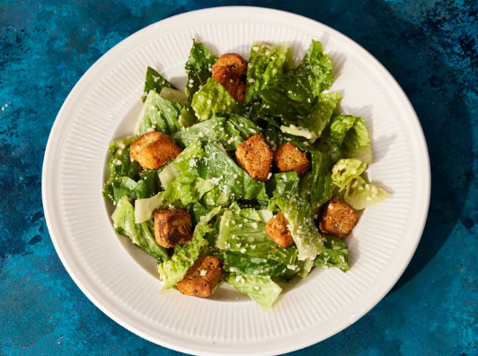

Caesar Salad

Description
All hail Caesar! Or at least, his salad! This simple salad has a delicious dressing to top it off, both of which you will learn to make in this recipe.
Dressing
- 3 anchovy fillets
- 2 cloves garlic, finely chopped
- 1/2 lemon, juiced
- 2 tablespoons red wine vinegar
- 1 large egg yolk
- 1 tablespoon Dijon sauce
- 1 dash Worcestershire sauce
- 1/4 cup olive oil
- Salt and ground black pepper to taste
Salad
- 1/2 head romaine lettuce, chopped
- 1/4 cup grated Parmesan cheese
- 2 tablespoons croutons
Steps
- Gather all ingredients
- To make the Caesar dressing: Mash anchovy fillets and garlic in a large salad bowl. Add lemon juice,
red wine vinegar, Dijon mustard, egg yolk, and Worcestershire sauce; whisk until smooth and creamy. Gradually stream
in olive oil while whisking constantly. Season to taste with salt and black pepper.
-
To serve: Gently mix romaine lettuce and Parmesan cheese into dressing until thoroughly coated.
-
Top Caesar salad with croutons and enjoy!
Home